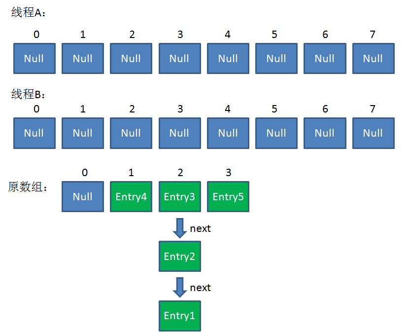
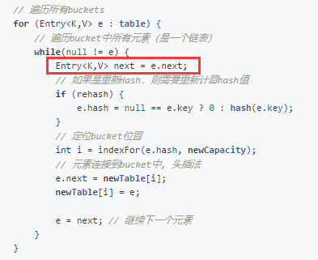
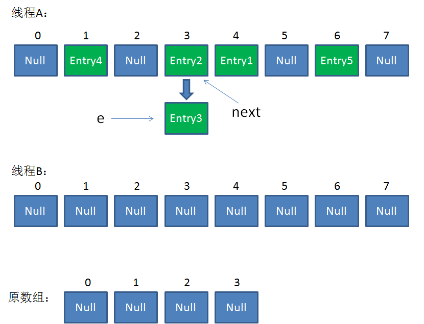
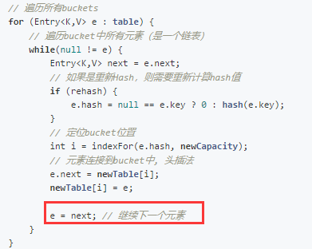
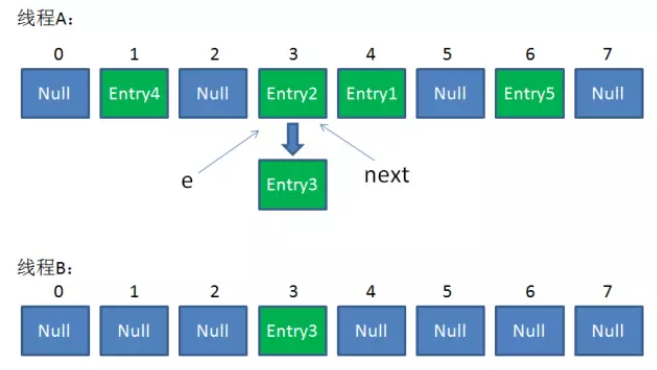
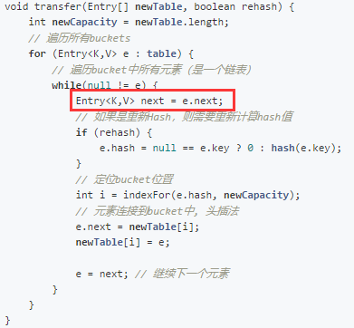
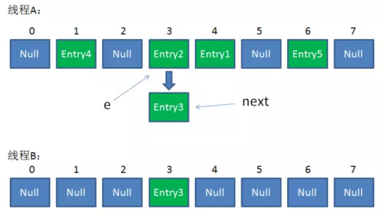
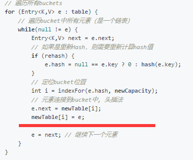
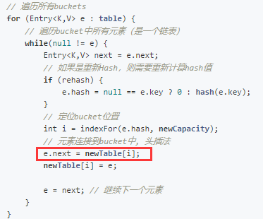
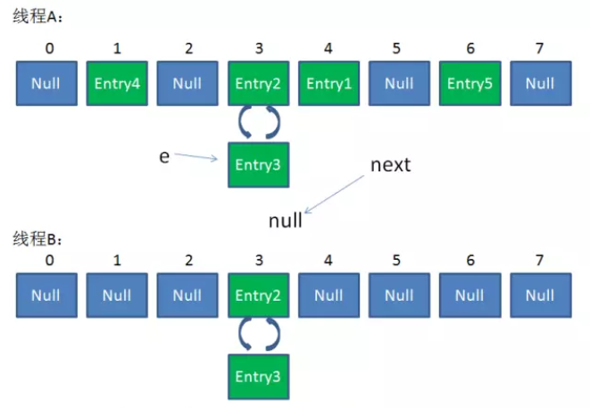

Preface
当HashMap中的数组元素数量越来越多，就越容易引起hash碰撞，从而影响容器的性能，所以HashMap设计成容量达到一定饱和度时（threshold），触发resize机制以对数组扩容。
resize
resize过程为：
- 创建一个空的新数组，长度为原数组的2倍
- 遍历原数组，把所有的Entry元素rehash到新数组
1 | // 按新的容量扩容Hash表 |
演练
当两个线程分别插入Entry4,Entry5

这时会一起触发resize机制，当线程B遍历table[2]的bucket时，执行完下面所示的代码，然后被挂起了。

这时e=Entry3,next=Entry2。
线程A这时将resize操作执行完了，结果如下(头插法引起倒序)：

线程B恢复执行，index继续为3(A线程中Entry3的indexFor结果是3).

执行到这里。Entry3头插法放入newTable中。[e=Entry3,next=Entry2] => [e = Entry2,next=Entry2]。

e!=null, 继续执行while循环

执行完所示代码后，由于线程A已经改变了Entry3与Entry2的引用，Entry2的next不再是Entry1,而是Entry3。 所以变为[e=Entry2, next=Entry3]。 如下图：

后面就是将e:Entry2头插法进入到线程B的newTable。

然后e=next。 如下图：
这时e!=null, 继续执行while循环。执行完所示代码后，[e=Entry3, next=null]
接下来就是继续往newTable里面塞。

执行完上面那行代码后，链表出现了环。

之后newTable[i]=e,e=next,e=next=null了就继续下一个bucket了，这个环就一直存在。后续如果线程B的newTable替换了原table。那么在get操作的时候，遍历table[3]就可能会出现死循环（在key hash到索引位置3，且key不是Entry2/Entry3时,就是死循环）
引起这个问题的关键点是：
- 头插法
- 一个线程resize之后的引用反向了。
- 另外一个线程获取next时重复处理了，再次头插法就直接导致出现环。
JDK8的HashMap是如何避免的
首先明确一点，jdk8没有专门的去解决这个问题。因为JDK明确说了多线程环境下不要使用HashMap。jdk8不出现这个问题是因为没有头插法了。